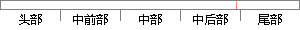

最后计算的结果会传入到显示模块。
片段位置图

相似结果|
相似片段 1：系统启动分析计算模块读取参数信息和模型文件自动进行有限元分析，最后将分析结果传入结果浏览模块，由其负责结果的存储和显示。因为在多数情况下不需要再增加新的继电器或者是壳体，而是从数据库里读取以前的模型及数据
相似片段 2：是参数输入对话框的一部分，它将用户输入的信息以数组的形式保存，然后对数据保存类赋值。同时将这些值以形参形式传入计算模块，同时将结果图形化显示。46（1）用户完成参数输入后点击确定按键提交（2）获取选择性
相似片段 3：声速法对声线进行修正，完成修正后目标的定位解算，并以上将两种信息存储，下传入作用范围及精度显示模块。8、 运动补偿模块为降低目标运动对定位解算的影响，可进行运动补偿。运动补偿模块接收上层时延信息计算模块下传的双程传播时延，直接解算目标位置信息，获得无运动补偿的定位结果。
相似片段 4：：电压表1～3 为三相电网电压测量模块；电流表 1～3 为三相氧化锌避雷器阻性泄漏电流测量模块，测量结果传入示波器 2 显示波形，传入 RMS 子模块进行有效值计算；电压表 4～6 为三相氧化锌避雷器
|
※ 片段修改建议 ※
近似词参考：- 最后：末了
- 计算：计较 较量争论 盘算
- 结果：成果 成绩 成效 后果 了局 效果
- 显示：表现
系统自动生成语句：末了计较的成果会传入到表现模块。
注：本片段修改建议为系统自动生成，仅供参考。